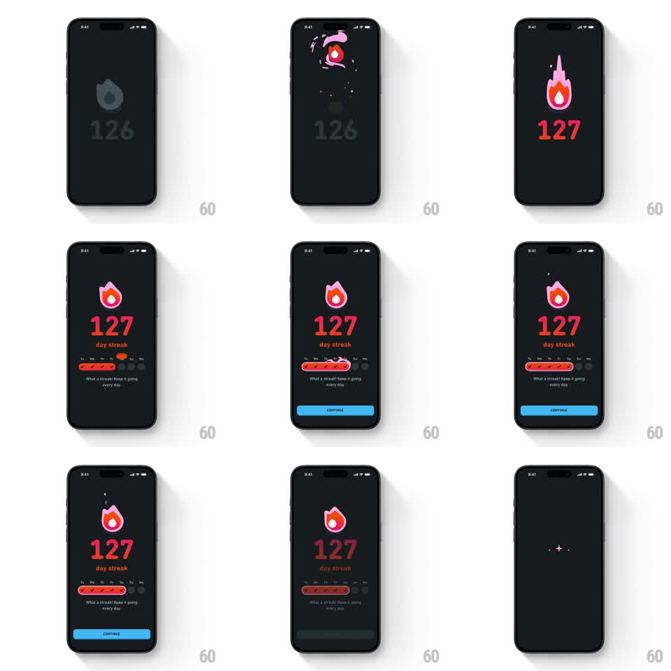

Media
Frame-by-frame

Rebuild this animation 1:1: Duolingo's streak milestone - a gold coin fades in over the old count, a flame draws on with a purple progress arc, the counter rolls from 126 to 127, the week calendar fills with checkmarks, and the Continue button slides up.

Rebuild this animation 1:1: Duolingo's streak milestone - a gold coin fades in over the old count, a flame draws on with a purple progress arc, the counter rolls from 126 to 127, the week calendar fills with checkmarks, and the Continue button slides up.
## Integration
Integration: stack-agnostic spec - springs given as stiffness/damping, timed motions as duration + curve; map every value to your framework and animation library of choice.
## Scene
Dark charcoal screen, fully composed top to bottom: a small gold coin that gives way to a large orange-pink flame icon under a purple arc, a giant coral-red counter ("126" rolling to "127"), "day streak" sublabel, a week row (Tu We Th Fr Sa Su Mo) of circles that fill with orange checkmarks, the caption "What a streak! Keep it going every day", and a blue CONTINUE pill at the bottom.
## Motion spec
Pattern: multi-stage milestone celebration, ~4s total.
- Coin: the gold coin scales in (0.6 -> 1, spring ~300/18, 400ms) over the dimmed "126", then flips away as the flame strokes on (draw, 300ms) under the purple arc (sweep, 400ms).
- Counter: digits roll vertically from 126 to 127 (500ms, ease-out, odometer-style), bumping scale 1 -> 1.08 -> 1 on land (spring ~400/20).
- Calendar: the week circles fill left to right with checkmarks (120ms stagger, pop 0.7 -> 1.1 -> 1 each).
- Continue: the blue pill slides up and fades in (300ms, ease-out, +200ms delay).
- Loop-out: the flame settles, then morphs into a small ring badge (400ms).
## Calibration
- Each stage starts only after the previous lands - this is a sequence, not a pile-up.
- The roll from 126 to 127 is the centerpiece; keep it readable at full size.
## Reduced motion
Stages cross-fade in place (200ms each); counter snaps to 127.
## Don't miss
- The purple arc above the flame is a progress ring, not decoration - it sweeps as the flame draws.
- The week row fills exactly seven slots ending on the current day.